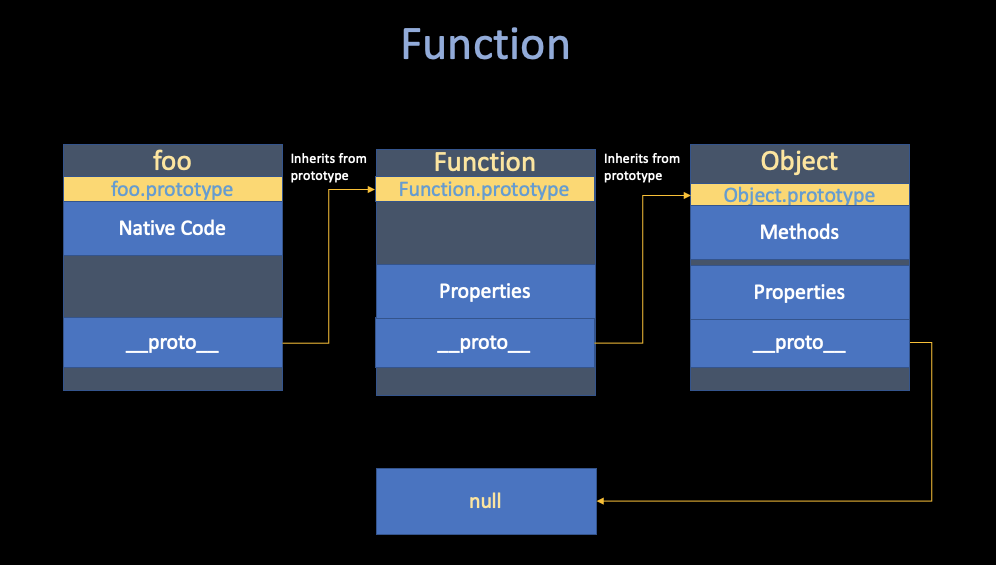
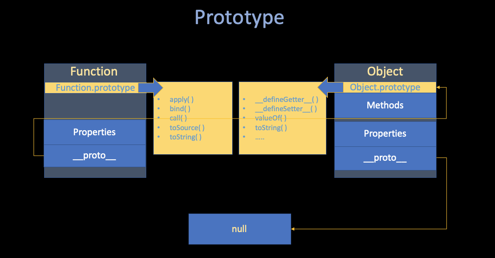
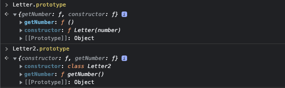

"JavaScript. The Core" Notes
Jiawei Wang (Angold-4) Nov 2021
- Paper : JavaScript. The Core
- Author : Dmitry Soshnikov
1. ECMAScript
Mocha -> LiveScript -> JavaScript -> ECMA-262 -> ECMAScript -> JavaScript (ECMAScript + DOM + BOM)
To start from the beginning, JavaScript derived its name from Java and initially Brendan Eich (the Co-founder of Mozilla) was asked to develop a language that resembled Java for the web for his company Netscape. But Eich decided that Java was too complicated and not suitable for web development, and set out to create a simple language that even a beginner could code in.
After the language was complete (Eich "wrote JavaScript in ten days" in 1995), the marketing team of Netscape requested Sun to allow them to name it JavaScript as a marketing stunt and hence why most people who have never used JavaScript think it's related to Java.
About a year or two after JavaScript's release in the browser, Microsoft's IE took the language and started making its own implementations such as JScript. At the same time, IE was dominating the market and not long after Netscape had to shut its project.
Before Netscape went down, they decided to start a standard that would guide the path of JavaScript, named ECMAScript.
JavaScript is the most popular implementation of the ECMAScript Standard!
After that Microsoft dominated the scenes but at the same time they weren't improving their product(IE) and hence Firefox was born (led by Eich) and a whole heap of other browsers such as Chrome, Opera, and they use JavaScript as their web scripting language (follow the ECMA Standard).
Notable JS Engines:
V8
- From Google
- Most Used JS Engine
- Used in Chromium-based browsers (Chrome)
SpiderMonkey
- From Mozilla Foundation
- The First JS Engine
- Used in FireFox
JavaScriptCore From WebKit
- From Apple
- Used in Safari
2. Prototype
i. JavaScript Type
"With the Prototype, almost everything there can also be presented as an object."
Let's start off by looking at the types. JavaScript programs manipulate values, and those values all belong to a type. In my opinion, there are only two kinds of types -- Primitives and Objects
-
Primitives
- Number
- BigInt
- String
- Boolean
- null
- undefined
-
Objects
- Function
- Array
- Date
- RegExp
From the implementation-level perspective, all-of these different types can be implement with Object.
ii. Objects
An object is a collection of properties, and has its own prototype -> either another object or null.
- The prototype is a delegation object used to implement prototype-based inheritance.
- The prototype can be set xeplicitly via either the
__proto__property, orObject.createmethod.
let point = { // point is an object
x: 10,
y: 20,
};
// either this way
let point3D = {
z: 30,
__proto__: point,
}
// or this way
let point3D = Object.create(point);
point3D.z = 30;
console.log(
point3D.x, // 10
point3D.y, // 20
point3D.z, // 30
);
The Prototype Chain, which is a finite chain of object.Shows how JavaScript implement inheritance and shared properties:

If a property is nout found in the object itself, The rule is very simple:
- There is an attempt to resolve it in the prototype; in the prototype of the prototype, etc.
- After the whole prototype chain is considered, if a property eventually not found, the
undefinedvalue is returned.
This mechanism is called Delegation, or Dynamic Dispatch. For those readers who want to have a closer look at the Prototype Chain, here is the detail:

iii. Function
Every JavaScript function is actually a Function object or for the implemention level, A Function is just a object with its native code as a property and inherited from Object

Prototype
Here comes a question:
We haven't defined any method of object point3D. How does this object have toString() method?
In ii. Objects, we introduced Dynamic Dispatch.
From that, we can know toString() method must be defined in the Prototype Chain of object point3D.
So, where are the inherited properties and methods defined?
If you look at the Object reference page, you'll see listed in the left hand side a large number of properties and methods — many more than the number of inherited members we saw available on the point3D object. Some are inherited, and some aren't — why is this?
As mentioned above, the inherited ones are the ones defined on the prototype property — that is, the ones that begin with Object.prototype, and not the ones that begin with just Object.
The prototype property's value is an object, which is basically a bucket for storing properties and methods that we want to be inherited by objects further down the prototype chain.

if you try the following in your console:
Object.prototype
You'll see a large number of methods defined on Object's prototype property, which are then available on objects that inherit from Object, as shown earlier.
You'll see other examples of prototype chain inheritance all over JavaScript — try looking for the methods and properties defined on the prototype of the String, Date, Number, and Array global objects.
iv. Class
When several objects share the same initial state and behavior, they form a classification.
A "Class" is just a theoretical abstraction, in the implementation-level, it usually represented as a "constructior function + prototype" pair. (or even if a object but cumbersome):
// Constructor Function
function Letter(number) {
this.number = number;
};
// Prototype
Letter.prototype.getNumber = function() {
return this.number;
}
let a = new Letter(1);
let b = new Letter(2);
// ...
let z = new Letter(26);
console.log(
a.getNumber(); // 1
b.getNumber(); // 2
// ...
z.getNumber(); // 26
);

For user-convinence (sometimes you don't want things to become cumbersome). The Class Abstraction serves exactly this purpose - being a syntactic sugar (a construct which semantically does the same, but in a much nicer syntactic form). It allows creating such multiple objects with the convenient pattern:
// Class
class Letter2 {
constructor(number) {
this.number = number;
}
getNumber() {
return this.number;
}
}
While you create a Class object, this syntactic sugar will help you automatically set the prototype. And if you check their prototype, you will find that there is no such big difference - And, both of them are Object.

v. Primitives
At the begining of this Note. I said:
All things in JavaScript can be presented as an Object, but there are something called Primitives that usually do not implement as an Object.
- Primitives : that is - Many things that you interact with regularly (
StringNumberandBoolean). - Reason : I Believe that is for the Speed -- Since most of the time when you create a Primitive type variable, you just want to do some calculation with others.
Or in other words - When you create a Primitive type variable, maybe you just want its
Value, rather than those "high-level" functions, etc.
var i = 12;
i.p1 = 13;
console.log(i); // 12
console.log(i.p1); // undefined
But primitives do have Object Wrappers (String, Number, Boolean, etc.); these objects have methods and properties while the primitives do not.
But the primitives appear to have methods because JavaScript silently creates a Wrapper Object when code attempts to access any property of a primitive.
For example, consider the following code:
var s = 'foo';
var sub = s.substring(1, 2); // sub is now the string "o"
Behind the scenes, s.substring(1, 2) behaves as if it is performing the following (approximate) steps:
- Create a wrapper
StringObject froms, equivalent to usingnew String(s); - Call the
substring()method with the appropriate parameters on theStringObject returned by step1; - Dispose of the
StringObject; - Return the string (primitive) from step2.
And that also explain why we can't access i.p1, while we can assign the property to primitives i.
--- We cannot retrieve them.
3. Runtime
After we understand the basic relationships between ECMAScript objects, Let's take a deeper look at JS runtime system You will see a bunch of concepts in the following contents, but remember -- they are just the Abstraction, the things that help you to have a better understanding about what runs underneath.
i. Execution Stack
There are severals types of ECMAScript code:
- Global Code
- Function Code
- Module Code
- ......
Each code is evaluated in its execution contextwhat do I means by evaluate is that interprete the code and then execute.
Let's consider a recursive function call:
function recursive(flag) {
// Termination Condition
if (flag == 2) {
return;
}
recursive(++flag);
}
// Entry.
recursive(0);
The following figure shows the runtime of this function:

- The Execution Context Stack is a LIFO structure(stack), that used to maintain control flow and order of execution.
- The Global Context is always at the bottom of the stack, it is created prior execution of any other context
This example may give you a better understanding of Execution Context:
function *gen() { // generator function in javascript
yield 1;
return 2;
}
let g = gen();
console.log(
g.next().value, // 1
g.next().value, // 2
)

- The
yieldstatement here returns the value to the caller, and pops the context. - One the second
next()call, the same context is pushed again onto the stack, and is resumed.
ii. Variable Storiage
Every execution context has an associated lexical environment -- called Environment.
- Environment can be defined in both ways:
- A structure used to define associaton between identifiers appearing in the context with their values.
- A storage of variables, functions, and classes (Objects) defined in this Execution Context.
Technically, an environment is a pair, consisting of an environment record (an actual storage table which maps identifiers to values), and a reference to the parent (which can be null).
Similarly to Prototype Chain which we've discussed above. the rule for identifiers resolution is very similar: if a variable is not found in the own environment, there is an attempt to lookup it in the parent environment, in the parent of the parent, and so on — until the whole environment chain is considered.
this
The this is a special object, the major use-case of this is the class-based OOP.
For example:
class Point {
constructor(x, y) {
this._x = x;
this._y = y;
}
getX() {
return this._x;
}
getY() {
return this._y;
}
}
let p1 = new Point(1, 2);
let p2 = new Point(3, 4);
console.log(
p1.getX(); // 1
p2.getX(); // 3
)
When the getX() method be called by p1, or the getX() Execution Context being created
For this Execution Context there will be an Environment being created to store local variables and parameters.
In addition, the getX() Environment will implicit gets a this passed into, which is bound dynamically depending how a function is called.
console.log(x); // undefined
console.log(y); // throw reference error
var x = 10;
let y = 20;
console.log(this.x); // 10
console.log(this.y); // undefined
console.log(x); // 10
console.log(y); // 20
At the high-level, the this object is exactly a Binding Object.